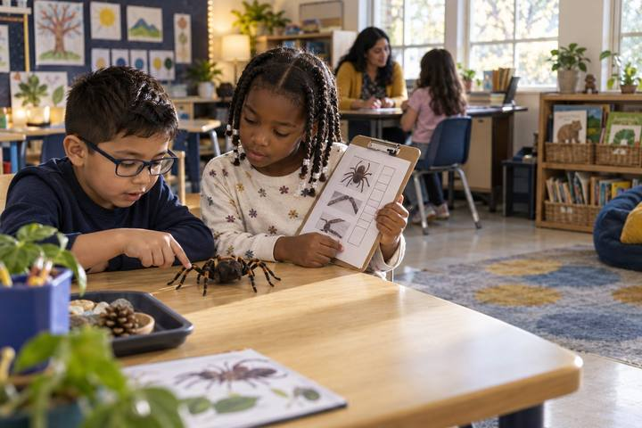

Học tập của học sinhdành cho Lớp K–2
Kiểm Tra Hai Nơi
Một người máy trợ giúp rất tự tin nói những điều lúc đúng lúc sai, và các em trở thành người làm chủ việc học bằng cách kiểm tra mỗi câu trả lời ở hai nơi trước khi tin.
Tất cả hoạt động Học tập của học sinh
Một thiếu niên và một phụ huynh mỗi người theo dõi thời gian dùng màn hình thực tế của chính mình trong một ngày, sau đó ngồi lại so sánh gương, đọc những gì nghiên cứu thực sự nói, và cùng viết một tuyên bố ngắn về lập trường gia đình đối với thời gian dùng màn hình và điện thoại ở trường.
Các cuộc trò chuyện về thời gian dùng màn hình giữa thiếu niên và phụ huynh thường bị bế tắc vì mỗi bên đều nhìn phía bên kia như là vấn đề. Hoạt động này đặt tấm gương trước cả hai. Trong một ngày bình thường, thiếu niên và một phụ huynh mỗi người tự theo dõi việc sử dụng thiết bị của mình, một cách trung thực, trong cùng một nhật ký đơn giản. Rồi họ trao đổi nhật ký và trò chuyện. Trước khi phán xét, họ đọc một bản tóm tắt ngắn gọn, công bằng về những gì các nghiên cứu lớn năm 2026 thực sự tìm thấy: một số mối liên quan giữa việc sử dụng nhiều và kết quả học tập thấp hơn cùng lo lắng nhiều hơn, một nghiên cứu dài hạn cho thấy những người dùng màn hình nhiều hơn có khả năng xử lý nhận thức tốt hơn khi còn là thiếu niên, và một nghiên cứu trên cặp song sinh gợi ý rằng mối liên quan với sức khỏe tâm thần có thể yếu hơn những gì các tiêu đề tuyên bố khi đã tính đến nền tảng gia đình. Học sinh thực hành phân biệt một phát hiện thực sự với một tiêu đề đáng sợ, nhận ra rằng tương quan không phải là quan hệ nhân quả, và phân biệt người lớn hiếm gặp chuyên nghiên cứu vấn đề này với một ứng dụng đang cố giữ họ cuộn tiếp. Các em kết thúc bằng việc cùng viết một tuyên bố lập trường gia đình một trang, bao gồm lập trường của họ về điện thoại trong giờ học theo các luật như Texas HB 1481.
Khởi động
Yêu cầu mỗi học sinh tự viết hai con số: các em nghĩ mình dùng điện thoại bao nhiêu phút trong một ngày học, và bao nhiêu phút một phụ huynh dùng điện thoại của họ. Rồi chia sẻ con số nghiên cứu thực tế: một nghiên cứu năm 2026 trên một tạp chí y khoa phát hiện rằng thanh thiếu niên Mỹ trung bình dùng điện thoại khoảng 70 phút chỉ trong giờ học. Hỏi: "Ước tính của các em cao hay thấp? Ước tính của phụ huynh về bản thân họ có chính xác hơn không?" Đặt ra nhiệm vụ cho ngày: ngừng đoán, bắt đầu nhìn vào gương.
Ghi chú cho người điều phốiGiữ con số 70 phút như một điểm khởi đầu cho cuộc trò chuyện, không phải một bản phán quyết. Điểm mấu chốt là mọi người, cả thiếu niên lẫn người lớn, đều ước lượng sai thời gian sử dụng của bản thân.
Khám phá
Giải thích nhiệm vụ tại nhà. Trong một ngày bình thường, thiếu niên và một phụ huynh mỗi người ghi Phiếu A: các khoảng thời gian dùng thiết bị ước tính, dùng để làm gì (kết nối, sáng tạo, học hỏi, làm việc, thư giãn, lướt vô thức), và cảm giác ngay sau đó. Bảng theo dõi thời gian dùng màn hình trên điện thoại có thể giúp nhớ lại, nhưng nhật ký mới là tài liệu chính thức. Quy tắc cho cả hai người là như nhau: trung thực, không chỉnh sửa, chưa phán xét. Ngày hôm sau họ trao đổi nhật ký và đọc của nhau trước khi nói bất kỳ điều gì.
Ghi chú cho người điều phốiBình đẳng về điều kiện là toàn bộ thiết kế. Nếu chỉ theo dõi thiếu niên, nó trở thành giám sát; khi phụ huynh cũng theo dõi, nó trở thành một cái nhìn chung.
Khám phá
Trong lớp (hoặc ở nhà trước cuộc trò chuyện), học sinh đọc Phiếu B, một bản tóm tắt công bằng, ngôn ngữ đơn giản về một số phát hiện năm 2026 chỉ theo các hướng khác nhau. Các em đánh dấu mỗi phát hiện là "gợi ý màn hình có thể gây hại," "gợi ý màn hình có thể có lợi hoặc trung lập," hay "còn phức tạp," và gạch dưới mỗi chỗ văn bản nói liên quan đến thay vì gây ra. Thảo luận: "Nếu những nghiên cứu quy mô lớn như vậy còn bất đồng, điều đó nói gì với chúng ta về bất kỳ tiêu đề đáng sợ nào đó?"
Ghi chú cho người điều phốiGiữ vững ranh giới giữa tương quan và quan hệ nhân quả. Học sinh nên có thể nói: "Sử dụng nhiều hơn có liên quan đến điểm số thấp hơn, nhưng nghiên cứu không thể chứng minh màn hình đã gây ra điều đó."
Vận dụng
Đưa cho các cặp ba tiêu đề mô phỏng dựa trên cùng một nghiên cứu (ở trang thứ hai của Phiếu B) và yêu cầu họ viết lại mỗi tiêu đề thành một câu chính xác, không đáng sợ mà một phóng viên cẩn thận sẽ viết. Ví dụ, một tiêu đề la to rằng điện thoại "phá hủy" khả năng tập trung của thiếu niên trở thành "Nghiên cứu liên quan đến việc dùng điện thoại nhiều hơn với điểm kiểm tra thấp hơn một chút, nhưng không thể chứng minh điện thoại là nguyên nhân." Thảo luận về việc ai được lợi từ phiên bản đáng sợ và ai được lợi từ phiên bản chính xác.
Ghi chú cho người điều phốiĐây là cốt lõi của giáo dục truyền thông: cùng một phát hiện có thể được truyền tải trung thực hoặc bị dùng như vũ khí. Hãy nêu rõ rằng một nguồn tin chạy theo tương tác sẽ ưu tiên phiên bản đáng sợ.
Sáng tạo
Thiếu niên và phụ huynh dùng Phiếu C để cùng viết một tuyên bố lập trường gia đình một trang. Tuyên bố đó nêu một hành vi mà mỗi người nhìn thấy trong gương của mình, một điều mỗi người sẽ thử, và lập trường của gia đình về điện thoại trong giờ học theo các luật như Texas HB 1481, kèm lý do. Cả hai cùng ký. Lập trường đó rõ ràng là một bản thảo có thể được chỉnh sửa; đây là lập trường chung, không phải hình phạt.
Ghi chú cho người điều phốiHướng tới sự đối xứng: phụ huynh cũng cam kết một thay đổi. Một lập trường mà chỉ thiếu niên thay đổi hiếm khi tồn tại lâu, và nó bỏ lỡ điểm mấu chốt rằng người lớn phản chiếu hành vi mà trẻ em học theo.
Suy ngẫm
Trong các nhóm nhỏ, học sinh chia sẻ (chỉ những gì các em cảm thấy thoải mái khi chia sẻ): "Điều gì trong gương của em làm em bất ngờ? Trong gương của phụ huynh em? Nghiên cứu có thay đổi lập trường của em không? Việc quyết định cùng nhau thay vì bị áp đặt một quy tắc cảm giác như thế nào?" Ghi lại các chủ đề về tự theo dõi trung thực và đọc nghiên cứu cẩn thận.
Ghi chú cho người điều phốiBảo vệ quyền riêng tư: không ai phải tiết lộ con số. Các kỹ năng có thể chuyển giao là tự nhận thức, đọc bằng chứng và thương lượng từ dữ liệu chung.
Toàn bộ hoạt động có thể thực hiện trên giấy: cả hai người có thể ước tính thời gian dùng thiết bị theo các khoảng từ trí nhớ mà không cần mở bảng theo dõi, đọc bản tóm tắt nghiên cứu in sẵn, viết lại các tiêu đề, và viết tay lập trường gia đình. Sự trung thực của nhật ký quan trọng hơn độ chính xác của số phút.
Mỗi người có thể dùng riêng bảng theo dõi thời gian dùng màn hình tích hợp sẵn trên điện thoại để làm nhật ký của mình chính xác hơn, coi đó là công cụ nhắc nhở bộ nhớ cá nhân, không phải thứ phải nộp. Các gia đình thích có thể gõ lập trường trong một tài liệu dùng chung và đặt ngày xem lại như một lời nhắc trên lịch.
Có cần màn hình không? Con đường kỹ thuật số bổ sung thêm một điều trung thực mà giấy không thể làm được: bảng theo dõi có thể cho bạn thấy ước tính của mình cách xa thực tế bao nhiêu, đó chính xác là sự tự nhận thức mà hoạt động này hướng đến. Nó vẫn là tùy chọn và riêng tư, vì việc học nằm ở sự so sánh và cuộc trò chuyện, không phải ở công cụ.
Những gì bạn có thể quan sát hoặc thu thập được nếu hoạt động thành công.
Học sinh theo dõi việc sử dụng thiết bị của bản thân, đọc các nghiên cứu đa chiều về thời gian dùng màn hình, và phân biệt tương quan với nhân quả trước khi cùng viết quan điểm gia đình, đánh giá nguồn tư liệu và bằng chứng.
Các gia đình xem lại lập trường vào ngày đã hẹn và điều chỉnh những gì không giữ được. Trong buổi học tiếp theo, học sinh mang kỹ năng phân biệt tương quan và quan hệ nhân quả vào đơn vị giáo dục truyền thông, đánh giá cách một bài báo hiện tại truyền đạt một nghiên cứu, và kết nối lập trường về điện thoại trong ngày học với chính sách của trường theo HB 1481.